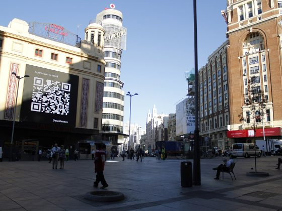
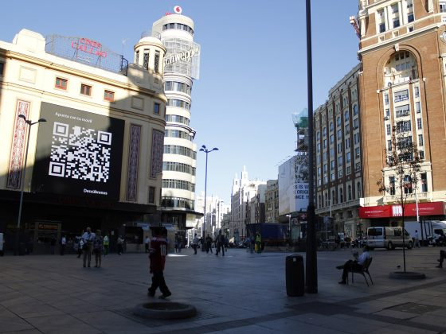

Why you’ll love vacation in Burgundy
There may be no more beautiful way to explore the countryside villages
of timeless Burgundy than from a river barge coasting the Saône River.
Drift from one stunning landscape to another, stopping to roam the
region’s famous vineyards, ride bikes through its vast forests, and
indulge in its unforgettable flavours. This is a unique perspective of
the France you've dreamed about.
Read more >>

672
Trips

98
Venues

2,231
Tickets sold

1,245
Reviews
What Burgundy is about
Two great French passions, wine and food, come together here in a
particularly rich and enticing form. In 2015, Burgundy's vineyards
were granted Unesco World Heritage status in recognition of the
region's centuries-old history of viticulture, combined with the
remarkable diversity of its winegrowing terroir. Combining wine and
gastronomy, Burgundy will stimulate your senses.
Read more >>

Route des Grands Crus
The Route des Grands Crus (roughly, "road of the great wines")
runs along the foot of the Côte d'Or escarpment, from Dijon in
the north to Santenay in the south. Thus it runs through many of
the great appellations of Burgundy wine, hence the name of the
route.

Heart of French Gastronomy
Burgundians are passionate about both their food and their wine.
Escargots à la Bourgogne, Boeuf Bourguignon, and Coq au Vin are
just three of the famous regional dishes. There are 29 restaurants
with the renowned Michelin stars, and one with three stars within
Burgundy.
Wine of Burgundy

The grapevines around the town of Chablis make a dry white wine
renowned for the purity of its aroma and taste. There are seven
officially delineated Grand Cru climats, covering an area of 247
acres , all located on one southwest facing hill overlooking the
town of Chablis at elevations between 490–660 feet. All of Chablis'
Grand Cru vineyards and Premier Cru vineyards are planted on
primarily Kimmeridgean soil which is composed of limestone, clay and
fossilized oyster shells.
Burgundy in Photos
Burgundy offers some of France's most gorgeous countryside: it’s a
paradise for lovers of the great outdoors. You can cycle through the
Côte d'Or vineyards, hike the wild reaches of the Parc Naturel
Régional du Morvan, glide along the Yonne's waterways in a canal boat,
or float above it all in a hot-air balloon. Every perspective will be
fine to discover a glorious architectural heritage that goes back to
the Renaissance, the Middle Ages and into the mists of Gallo-Roman and
Celtic antiquity.

 
